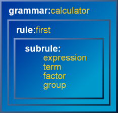

| Subrules |
 |
 |
 |
Spirit is implemented using expression templates. This is a very powerful technique. Along with its power comes some complications. We almost take for granted that when we write i | j >> k where i, j and k are all integers the result is still an integer. Yet, with expression templates, the same expression i | j >> k where i, j and k are of type T, the result is a complex composite type [see Basic Concepts]. Spirit expressions, which are combinations of primitives and composites yield an infinite set of new types. One problem is that C++ offers no easy facility to deduce the type of an arbitrarily complex expression that yields a complex type. Thus, while it is easy to write:
int r = i | j >> k; // where i, j, and k are intsExpression templates yield an endless supply of types. Without the rule, there is no easy way to do this in C++ if i, j and k are Spirit parsers:
<what_type???> r = i | j >> k; // where i, j, and k are Spirit parsersIf i, j and k are all chlit<> objects, the type that we want is:
typedef
alternative<
chlit<> // i
, sequence<
chlit<> // j
, chlit<> // k
>
>
rule_t;
rule_t r = i | j >> k; // where i, j, and k are chlit<> objectsWe deliberately formatted the type declaration nicely to make it understandable.
Try that with a more complex expression. While it can be done, explicitly spelling
out the type of a Spirit expression template is tedious and error prone. The
right hand side (rhs) has to mirror the type of the left hand side (lhs). ( Yet, if you still wish to do it, see this link
for a technique).
Yet, if you still wish to do it, see this link
for a technique).
|
Fortunately, rules come to the rescue. Rules can capture the type of the expression assigned to it. Thus:
rule<> r = i | j >> k; // where i, j, and k are chlit<> objectsIt might not be apparent but behind the scenes, plain rules are actually implemented using a pointer to a runtime polymorphic abstract class that holds the dynamic type of the parser assigned to it. When a Spirit expression is assigned to a rule, its type is encapsulated in a concrete subclass of the abstract class. A virtual parse function delegates the parsing to the encapsulated object.
Rules have drawbacks though:
 It is coupled to a specific
scanner type. The rule is tied to a specific scanner [see The
Scanner Business].
It is coupled to a specific
scanner type. The rule is tied to a specific scanner [see The
Scanner Business].
 The rule's parse member
function has a virtual function call overhead that cannot be inlined.
The rule's parse member
function has a virtual function call overhead that cannot be inlined.
The subrule is a fully static version of the rule. The subrule does not have the drawbacks listed above.
 The subrule is not tied
to a specific scanner so just about any scanner type may be used
The subrule is not tied
to a specific scanner so just about any scanner type may be used
 The subrule also allows
aggressive inlining since there are no virtual function calls
The subrule also allows
aggressive inlining since there are no virtual function calls
template<int ID, typename ContextT = parser_context<> >
class subrule;The first template parameter gives the subrule an identification tag. Like
the rule, there is a ContextT template parameter that
defaults to parser_context. You need not be concerned
at all with the ContextT template parameter unless you wish to tweak
the low level behavior of the subrule. Detailed information on the ContextT
template parameter is provided elsewhere.
Presented above is the public API. There may actually be more template parameters after ContextT. Everything after the ContextT parameter should not be of concern to the client and are strictly for internal use only.
Apart from a few minor differences, the subrule follows the usage and syntax of the rule closely. Here's the calculator grammar using subrules:
struct calculator : public grammar<calculator>
{
template <typename ScannerT>
struct definition
{
definition(calculator const& self)
{
first =
(
expression = term >> *(('+' >> term) | ('-' >> term)),
term = factor >> *(('*' >> factor) | ('/' >> factor)),
factor = integer | group,
group = '(' >> expression >> ')'
);
}
subrule<0> expression;
subrule<1> term;
subrule<2> factor;
subrule<3> group;
rule<ScannerT> first;
rule<ScannerT> const&
start() const { return first; }
};
}; A fully working example with
semantic actions can be viewed
here. This is part of the Spirit distribution.
A fully working example with
semantic actions can be viewed
here. This is part of the Spirit distribution.
|  |
The subrule as an efficient version of the rule. Compiler optimizations such as aggressive inlining help reduce the code size and increase performance significantly.
The subrule is not a panacea however. Subrules push the C++ compiler hard to its knees. For example, current compilers have a limit on recursion depth that may not be exceeded. Don't even think about writing a full pascal grammar using subrules alone. A grammar using subrules is a single C++ expression. Current C++ compilers cannot handle very complex expressions very well. Finally, a plain rule is still needed to act as place holder for subrules.
The code above is a good example of the recommended way to use subrules. Notice the hierarchy. We have a grammar that encapsulates the whole calculator. The start rule is a plain rule that holds the set of subrules. The subrules in turn defines the actual details of the grammar.
Spirit pushes the C++ compiler hard. Current C++ compilers cannot handle very complex heavily nested expressions very well. One restricting factor is the typical compiler's limit on template recursion depth. Some, but not all, compilers allow this limit to be configured. g++'s maximum can be set using a compiler flag: -ftemplate-depth. Set this appropriately if you have a relatively complex grammar. Microsoft Visual C++ can take greater than 1000 for both template class and function instantiation depths. However, the linker chokes with deep template function instantiation unless inline recursion depth is set using these pragmas: #pragma inline_depth(255) #pragma inline_recursion(on) Perhaps this limitations no longer applies to more current versions of these compilers. Be sure to check your compiler documentation. |
This setup gives a good balance. The subrules do all the work. Each grammar will have only one rule: first. The rule is used just to hold the subrules and make them visible to the grammar.
Like the rule, the expression after assignment operator = defines the subrule:
identifier = expression
Unlike rules, subrules may be defined only once. Redefining a subrule is illegal and will result to a compile time assertion.
While rules are terminated by the semicollon ';'. Subrules are not terminated but are separated by the comma: ','. Like Pascal statements, the last subrule in a group may not have a trailing comma.
a = ch_p('a'), b = ch_p('b'), c = ch_p('c'), // BAD, trailing comma
a = ch_p('a'),
b = ch_p('b'),
c = ch_p('c') // OKUnlike rules, parsing proceeds from the start subrule. The first (topmost) subrule in a group of subrules is called the start subrule. In our example above, expression is the start subrule. When a group of subrules is called forth, the start subrule expression is called first.
Each subrule has a corresponding ID; an integral constant that uniquely specifies the subrule. Our example above has four subrules. They are declared as:
subrule<0> expression;
subrule<1> term;
subrule<2> factor;
subrule<3> group;It is possible to have subrules with similar IDs. A subrule with a similar ID to will be an alias of the other. Both subrules may be used interchangeably.
subrule<0> a;
subrule<0> alias; // alias of aThe scope of a subrule and its definition is the enclosing group, typically (and by convention) enclosed inside the parentheses. IDs outside a scope are not directly visible. Inner subrule groups can be nested by enclosing each sub-group inside another set of parentheses. Each group is unique and acts independently. Consequently, while it may not be advisable to do so, a subrule in a group may share the same ID as a subrule in another group since both groups are independent of each other.
subrule<0> a;
subrule<1> b;
subrule<0> c;
subrule<1> d;
( // outer subrule group, scope of a and b
a = ch_p('a'),
b =
( // inner subrule group, scope of b and c
c = ch_p('c'),
d = ch_p('d')
)
)Subrule IDs need to be unique only within a group. A grammar is an implicit group. Furthermore, even subrules in a grammar may have the same IDs without clashing if they are inside a group. Subrules may be explicitly grouped using the parentheses. Parenthesized groups have unique scopes. In the code above, the outer subrule group defines the subrules a and b while the inner subrule group defines the subrules c and d. Notice that the definition of b is the inner subrule.
|
|
|
Copyright © 1998-2003 Joel de Guzman
Use, modification and distribution is subject to the Boost Software
License, Version 1.0. (See accompanying file LICENSE_1_0.txt or copy at
http://www.boost.org/LICENSE_1_0.txt)